Indi Teppich — a brand that steps back so the rug can lead
Positioning, identity and a design system for a handmade-rug house from Bhadohi, carried through to a live online store. Expression lives in the product; authority lives in the system.
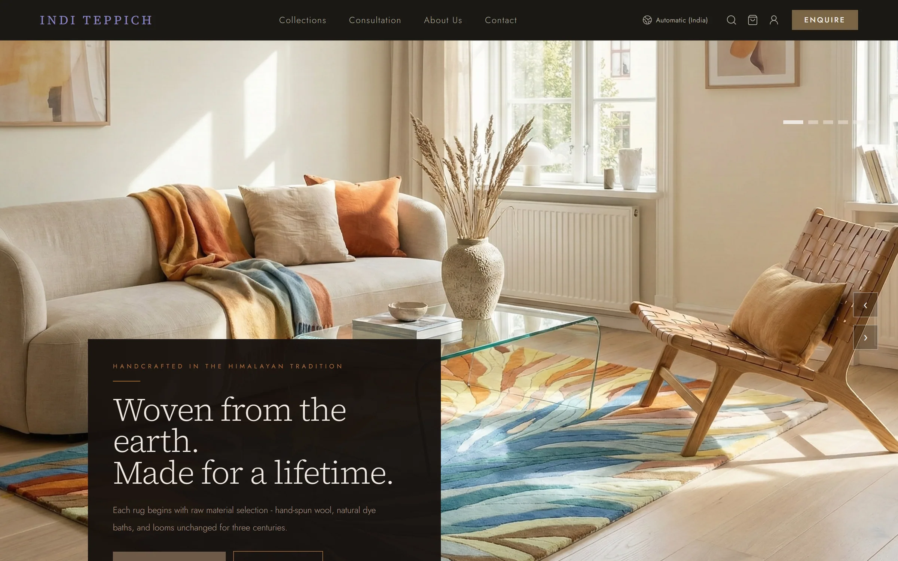
Context
Indi Teppich makes hand-knotted and loop-pile rugs in Bhadohi, the heart of India's carpet-weaving belt, for private homes, architects and boutique hospitality. The rugs are vivid and full of pattern. The risk was a brand that competed with them, or one that looked like every other heritage rug seller.
Positioning before pixels
Before any logo, the brand was defined by what it is: a contemporary textile house shaping refined Indian spaces through sculptural, architecturally grounded carpets, rooted in generational Bhadohi craftsmanship.
It was defined just as firmly by six things it refuses to be: a volume supplier; a revival house reproducing Persian, Mughal or Moroccan patterns; trend-driven; discount-led; a make-anything custom studio; fast for the sake of speed. Every later design decision was checked against that list.
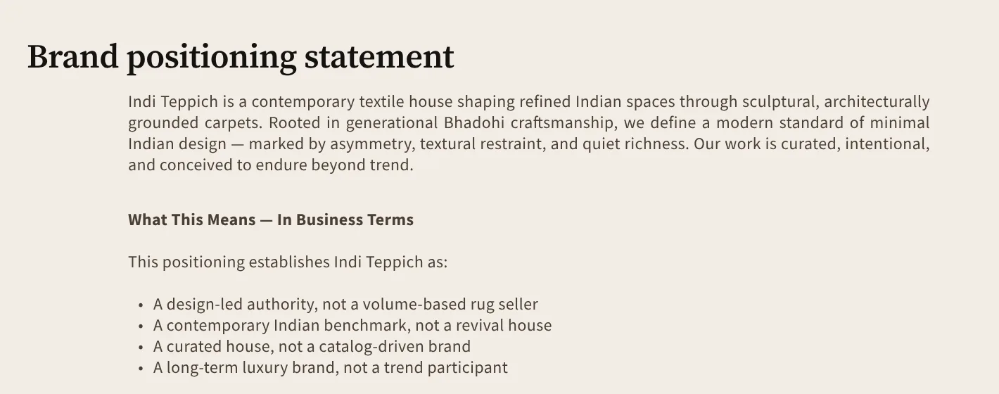
From the brand foundation: the positioning statement and what it establishes.
Expression lives in the product. Authority lives in the system.
Two marks, two jobs
Early directions tried to fit a wordmark and a symbol into one lockup, and each time the combination diluted both. So the roles were split. A calm serif wordmark leads everywhere: the website header, documents, packaging. A script I/T signature mark stands for the making hand, and is kept for certificates of authenticity, embossing and craft-facing pieces. The hierarchy is fixed: the wordmark leads, and the signature mark never competes with it.
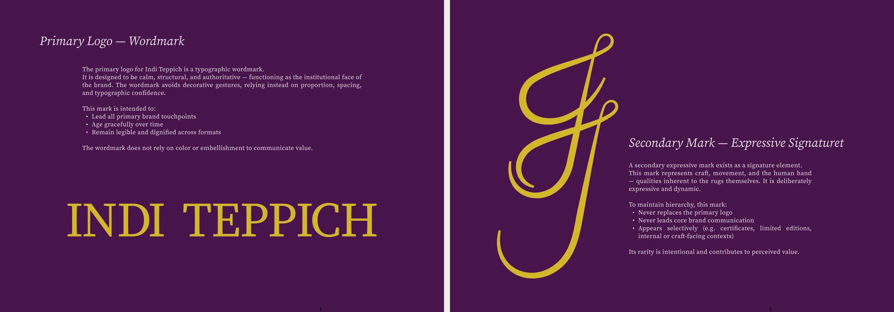
The January proposal: primary wordmark and secondary signature mark, still in the first plum and gold.
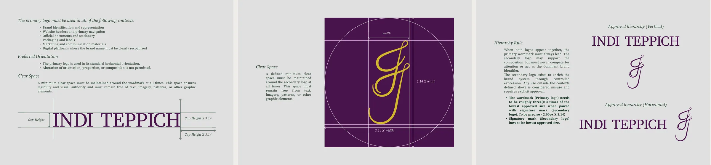
Logo manual: wordmark clear space, signature-mark construction, approved lockups.
A palette that steps back
The first palette, in January, was plum and gold. The final system, in March, is eight earth colours drawn from natural-dye heritage (indigo, saffron, walnut, undyed wool), each with its print and digital values and a fixed share of the page. One test governs all of it:
Cover your product photography. If the palette feels flat or generic without it, it's working too hard.

January's plum and gold (left) and the final eight colours, with Pantone, CMYK and screen values.
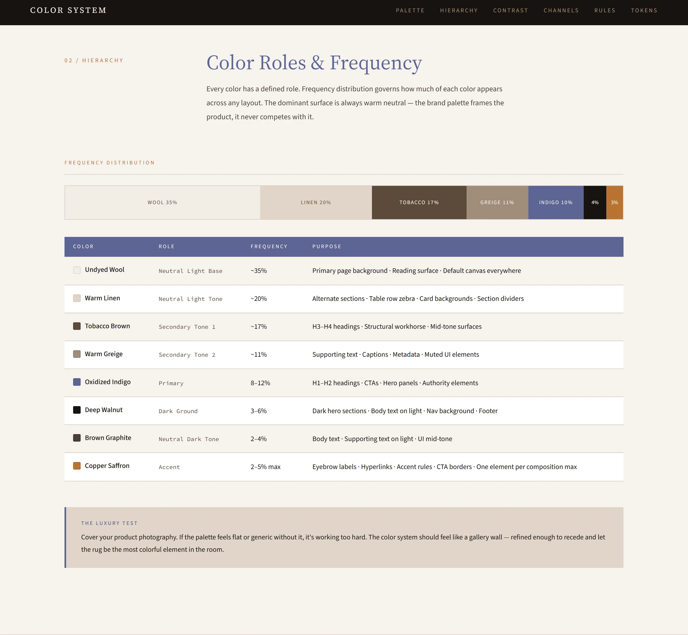
Every colour has a role and a share of the page. Undyed wool carries most of it; copper saffron is held to 2–5%.
Two typefaces, no exceptions
Source Serif for the voice, Source Sans for everything functional, five permitted weights across both, and a type scale set for phone, tablet and desktop. No third typeface, for any campaign.
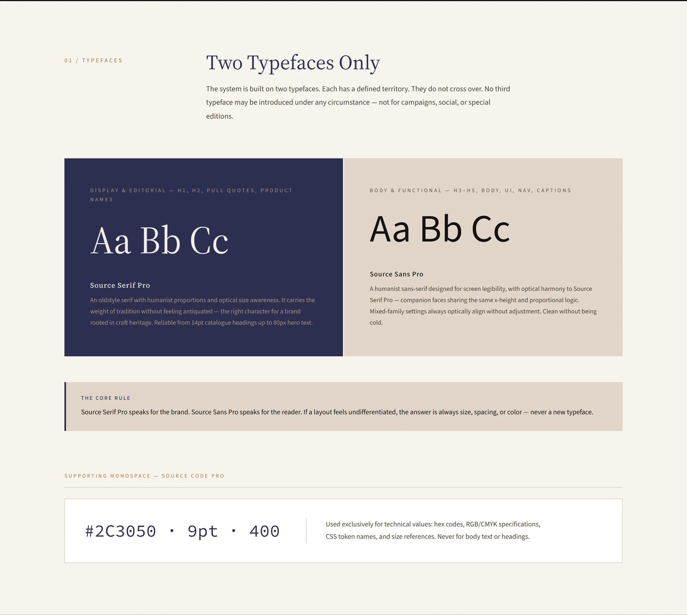
From the type guidelines: one serif, one sans, each with a defined territory.
A pattern made of the name
The brand pattern repeats the serif I and T of the wordmark, tone on tone in brown graphite, so the identity can fill a surface (packaging, a wall, a lining) without introducing a new motif.
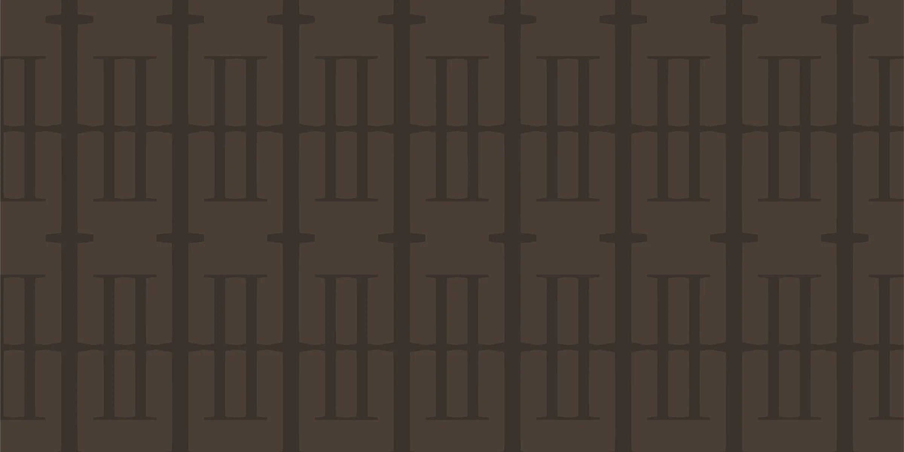
The design system
The website runs on a Figma system built to take decisions once. Colour variables sit in three layers (primitives, semantic, component), so a rebrand only touches the bottom layer. Type and spacing switch by variable mode across breakpoints instead of tripling the components. Every rule has a reason in a decisions log.
The site plan itself went from 26 pages to 7, then to a locked core of five. A luxury brand can always justify one more page (a lookbook, press, stockists), and the hard limit kept the project deliverable.
The live store
The system carried through to the live site: a dark editorial hero, collections with filters, product pages with sizes and an augmented-reality room preview, and a booking flow for consultations, all in the earth palette with the serif carrying the voice.
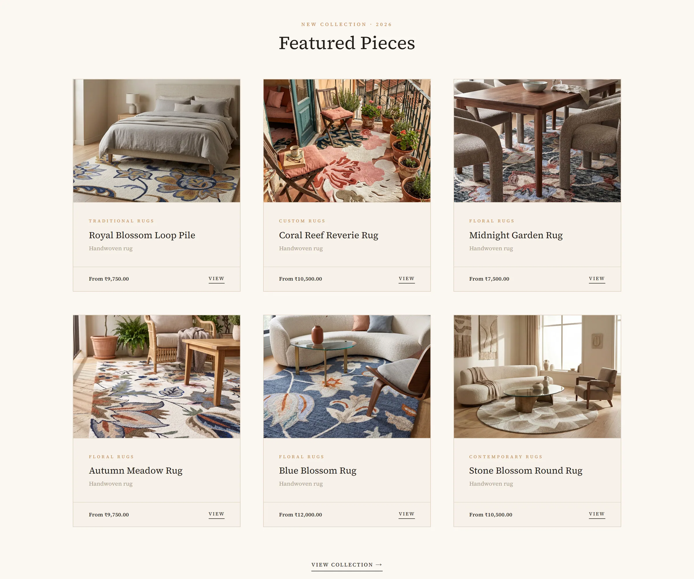
Featured pieces on the home page.
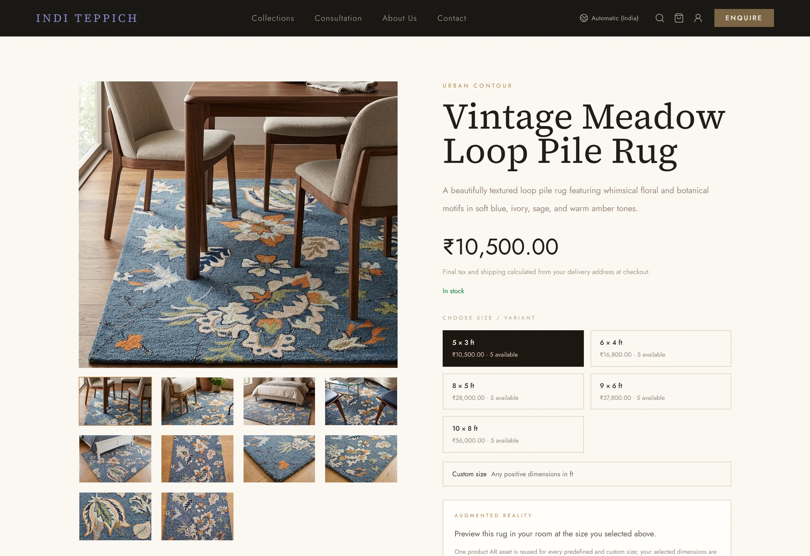
Product page: gallery, sizes, and an AR preview of the rug in your room.
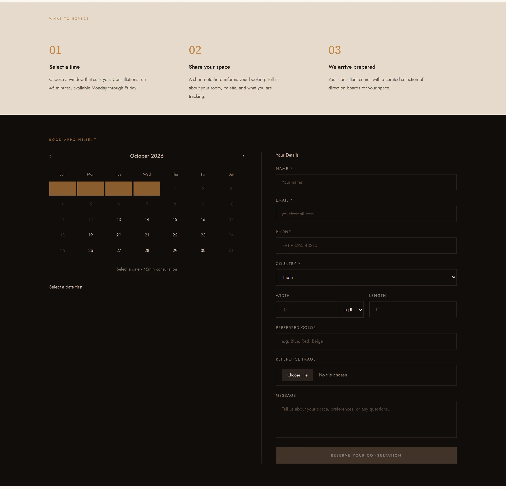
Consultation: three steps, then a calendar and a short brief about the space.
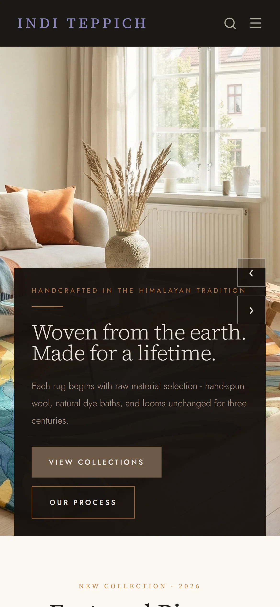
The home page on a phone.
Positioning, brand foundation, logo, colour and type guidelines, pattern, design system and website design are mine. The Figma screens were assembled with an AI assistant working from my design system and direction. Product photography belongs to the client.